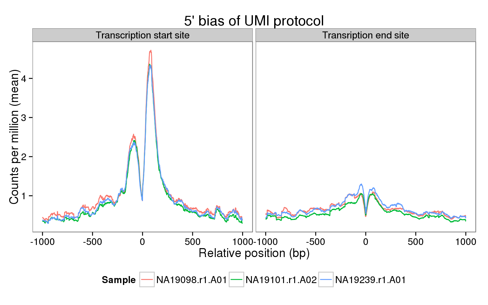

Last updated: 2016-02-22
Code version: c583b1dbf009e01374eca3103be81ca554fd7fb1
The sequencing coverage from the UMI protocol should show a very strong 5’ bias. Do we observe this in our data? Here we explore this in a few samples using the genomation package. Specifically, we calculate the mean coverage across all the genes that passed our expression filters for two regions:
library("genomation")
library("Rsamtools")
library("plyr")
library("tidyr")
library("ggplot2")
theme_set(theme_bw(base_size = 14))
theme_update(panel.grid.minor.x = element_blank(),
panel.grid.minor.y = element_blank(),
panel.grid.major.x = element_blank(),
panel.grid.major.y = element_blank())Input filtered molecule counts.
molecules_filter <- read.table("../data/molecules-filter.txt", header = TRUE,
stringsAsFactors = FALSE)To investigate the coverage, we select one high quality cell from each individual. Note that for the actual data files, the names are more succinct to keep them shorter.
quality_cells <- c("19098.1.A01", "19101.1.A02", "19239.1.A01")
names(quality_cells) <- c("NA19098.r1.A01", "NA19101.r1.A02", "NA19239.r1.A01")
stopifnot(names(quality_cells) %in% colnames(molecules_filter))From the sequencing pipeline, the bam files for the molecules are in bam-rmdup-umi and have the filename structure individual.replicate.well.trim.sickle.sorted.combined.rmdup.bam. Unfortunately, after processing with UMI-tools, the bam files are no longer sorted. It is necessary to sort them and then index them to use with genomation.
bam_molecules_unsorted <- paste0(quality_cells, ".trim.sickle.sorted.combined.rmdup.bam")
data_dir <- "/mnt/gluster/home/jdblischak/ssd"
from_file <- file.path(data_dir, "bam-rmdup-umi", bam_molecules_unsorted)
to_file <- file.path("../data", bam_molecules_unsorted)
sorted_file_prefix <- paste0(sub(".bam$", "", to_file), ".sorted")
sorted_file <- paste0(sorted_file_prefix, ".bam")
indexed_file <- paste0(sorted_file, ".bai")
for (f in 1:length(bam_molecules_unsorted)) {
if (!file.exists(indexed_file[f])) {
stopifnot(file.exists(from_file[f]))
file.copy(from_file[f], to_file[f])
sortBam(to_file[f], sorted_file_prefix[f])
indexBam(sorted_file[f])
}
}
stopifnot(file.exists(indexed_file))
bam <- sorted_file
bam[1] "../data/19098.1.A01.trim.sickle.sorted.combined.rmdup.sorted.bam"
[2] "../data/19101.1.A02.trim.sickle.sorted.combined.rmdup.sorted.bam"
[3] "../data/19239.1.A01.trim.sickle.sorted.combined.rmdup.sorted.bam"The genomic features are created with the script create-transcripts.R.
Input transcription start sites (TSS).
tss <- readBed("../data/tss.bed")
tss <- tss[tss$name %in% rownames(molecules_filter)]Input transcription end sites (TES).
tes <- readBed("../data/tes.bed")
tes <- tes[tes$name %in% rownames(molecules_filter)]TSS
tss_sm = ScoreMatrixList(target = bam, windows = tss, type = "bam",
rpm = TRUE, strand.aware = TRUE)working on: 19098.1.A01.trim.sickle.sorted.combined.rmdup.sorted.bam
Normalizing to rpm ...
working on: 19101.1.A02.trim.sickle.sorted.combined.rmdup.sorted.bam
Normalizing to rpm ...
working on: 19239.1.A01.trim.sickle.sorted.combined.rmdup.sorted.bam
Normalizing to rpm ...tss_smscoreMatrixlist of length:3
1. scoreMatrix with dims: 12192 2001
2. scoreMatrix with dims: 12192 2001
3. scoreMatrix with dims: 12192 2001TES
tes_sm = ScoreMatrixList(target = bam, windows = tes, type = "bam",
rpm = TRUE, strand.aware = TRUE)working on: 19098.1.A01.trim.sickle.sorted.combined.rmdup.sorted.bam
Normalizing to rpm ...
working on: 19101.1.A02.trim.sickle.sorted.combined.rmdup.sorted.bam
Normalizing to rpm ...
working on: 19239.1.A01.trim.sickle.sorted.combined.rmdup.sorted.bam
Normalizing to rpm ...tes_smscoreMatrixlist of length:3
1. scoreMatrix with dims: 12191 2001
2. scoreMatrix with dims: 12191 2001
3. scoreMatrix with dims: 12191 2001Calculate the mean coverage per base pair for the TSS and and TES.
names(tss_sm) <- names(quality_cells)
tss_sm_df <- ldply(tss_sm, colMeans, .id = "sample_id")
colnames(tss_sm_df)[-1] <- paste0("p", 1:(ncol(tss_sm_df) - 1))
tss_sm_df$feature = "TSS"
tss_sm_df_long <- gather(tss_sm_df, key = "pos", value = "rpm", p1:p2001)names(tes_sm) <- names(quality_cells)
tes_sm_df <- ldply(tes_sm, colMeans, .id = "sample_id")
colnames(tes_sm_df)[-1] <- paste0("p", 1:(ncol(tes_sm_df) - 1))
tes_sm_df$feature = "TES"
tes_sm_df_long <- gather(tes_sm_df, key = "pos", value = "rpm", p1:p2001)Combine the two features.
features <- rbind(tss_sm_df_long, tes_sm_df_long)
# Convert base position back to integer value
features$pos <- sub("p", "", features$pos)
features$pos <- as.numeric(features$pos)
# Subtract 1001 to recalibrate as +/- 1 kb
features$pos <- features$pos - 1001
# Order factor so that TSS is displayed left of TES
features$feature <- factor(features$feature, levels = c("TSS", "TES"),
labels = c("Transcription start site",
"Transription end site"))ggplot(features, aes(x = pos, y = rpm, color = sample_id)) +
geom_line() +
facet_wrap(~feature) +
scale_color_discrete(name = "Sample") +
labs(x = "Relative position (bp)",
y = "Counts per million (mean)",
title = "5' bias of UMI protocol") +
theme(legend.position = "bottom")
The main caveat of this analysis is the very low coverage per gene of each single cell.
molecules_filter_sub <- molecules_filter[, names(quality_cells)]
colSums(molecules_filter_sub) / 10^3NA19098.r1.A01 NA19101.r1.A02 NA19239.r1.A01
63.947 71.561 65.646 mean_expr <- rowMeans(molecules_filter_sub)
summary(mean_expr) Min. 1st Qu. Median Mean 3rd Qu. Max.
0.0000 0.6667 1.6670 5.4800 4.3330 373.3000 The median across the genes for the mean number of molecules across these three samples is only 1.6666667 molecules.
sessionInfo()R version 3.2.0 (2015-04-16)
Platform: x86_64-unknown-linux-gnu (64-bit)
locale:
[1] LC_CTYPE=en_US.UTF-8 LC_NUMERIC=C
[3] LC_TIME=en_US.UTF-8 LC_COLLATE=en_US.UTF-8
[5] LC_MONETARY=en_US.UTF-8 LC_MESSAGES=en_US.UTF-8
[7] LC_PAPER=en_US.UTF-8 LC_NAME=C
[9] LC_ADDRESS=C LC_TELEPHONE=C
[11] LC_MEASUREMENT=en_US.UTF-8 LC_IDENTIFICATION=C
attached base packages:
[1] parallel stats4 grid stats graphics grDevices utils
[8] datasets methods base
other attached packages:
[1] ggplot2_1.0.1 tidyr_0.2.0 plyr_1.8.3
[4] Rsamtools_1.20.4 Biostrings_2.36.1 XVector_0.8.0
[7] GenomicRanges_1.20.5 GenomeInfoDb_1.4.0 IRanges_2.2.4
[10] S4Vectors_0.6.0 BiocGenerics_0.14.0 genomation_1.0.0
[13] knitr_1.10.5
loaded via a namespace (and not attached):
[1] Rcpp_0.12.0 formatR_1.2
[3] futile.logger_1.4.1 bitops_1.0-6
[5] futile.options_1.0.0 tools_3.2.0
[7] zlibbioc_1.14.0 digest_0.6.8
[9] evaluate_0.7 gtable_0.1.2
[11] gridBase_0.4-7 DBI_0.3.1
[13] yaml_2.1.13 proto_0.3-10
[15] dplyr_0.4.2 rtracklayer_1.28.4
[17] httr_0.6.1 stringr_1.0.0
[19] data.table_1.9.4 impute_1.42.0
[21] R6_2.1.1 XML_3.98-1.2
[23] BiocParallel_1.2.2 rmarkdown_0.6.1
[25] reshape2_1.4.1 lambda.r_1.1.7
[27] magrittr_1.5 codetools_0.2-11
[29] scales_0.2.4 htmltools_0.2.6
[31] GenomicAlignments_1.4.1 MASS_7.3-40
[33] assertthat_0.1 colorspace_1.2-6
[35] labeling_0.3 stringi_0.4-1
[37] lazyeval_0.1.10 RCurl_1.95-4.6
[39] munsell_0.4.2 chron_2.3-45